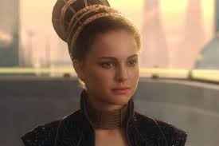
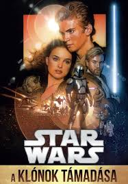

A klónok támadása tíz évvel a Baljós árnyak eseményei után játszódik.
A Galaktikus Köztársaság egyre instabilabbá válik,
mivel sok csillagrendszer ki akar válni belőle. Amidala szenátort,
a korábbi Naboo királynőt, merénylet fenyegeti, ezért Obi-Wan Kenobi
és tanítványa, Anakin Skywalker kapják a feladatot, hogy megvédjék őt.
Miközben Obi-Wan egy rejtélyes bérgyilkos után nyomoz, felfedezi,
hogy egy titokzatos bolygón,
Kamino-n egy hatalmas klónhadsereget hoztak létre a Köztársaság számára.
Közben Anakin és Padmé között érzelmi kapcsolat alakul ki,
ami tiltott a Jedik számára.
Anakin eközben egyre jobban küzd indulataival és belső vívódásaival.
A film végén kitör a Klónháború,
amely meghatározó lesz a galaxis jövője szempontjából,
és elindítja Anakin sötét úton való haladását.
A második részben lesz Padmé és Anakin szerelmes
és ebben a részben házasodnak össze,
ez miatt fog később Anakin átállni a sötét oldalra.
| Név | Főszereplők | Kiadás dátuma |
| Baljós árnyak | Qui-Gon Jinn, Anakin Skywalker, Obi Wan | 1999. május 19. |
| A klónok támadása | Obi Wan, Padmé, Anakin Skywalker | 2002. május 16. |
| A Sith-ek bosszúja | Obi Wan, Anakin Skywalker, Palpatine | 2005. május 19. |
 |
|
| Padme: Fontos személy a sorozatba, mert miatta kerül a rossz oldalra Anakin és ő az anyja két későbbi karakternek. | Anakin: Ebben a részben is fontos, mert ebben amik történnek később erősen befolyásolják a filmeket. |